Examples
Below are examples illustrating Simcoon’s main features. These examples are designed to serve as tutorials. In that sense, an effort is made to keep the scripts simple and executable with a low computational cost.
Mechanical Constitutive Laws
Below are examples illustrating Simcoon’s mechanical constitutive laws library.
Elastic Models:
ELISO - Isotropic elasticity
ELIST - Transversely isotropic elasticity
ELORT - Orthotropic elasticity
Plasticity Models:
EPICP - Plasticity with isotropic hardening (power-law)
EPKCP - Plasticity with combined isotropic and kinematic hardening
EPCHA - Plasticity with Chaboche hardening (cyclic plasticity); also runs the dedicated kernel kept under the name
EPCHA_closednext to the default modular engineEPJCK - Johnson-Cook plasticity (strain-rate sensitivity and thermal softening)
Viscoelastic Models:
ZENER - Poynting-Thomson (Zener) model
ZENER_N - Generalized Zener model (N Kelvin branches)
PRONY_N - Prony series (Generalized Maxwell)
Modular Models (composable ``MODUL`` UMAT):
MODUL - Elasticity block + von Mises plasticity with Voce hardening
MODUL_finite - The same composition under finite strain (Hencky hyperelasto-plasticity)
MODUL_hyper_visco - Yeoh hyperelastic block + Prony branches (finite-strain viscoelasticity)
MODUL_closest_point - Closest-point projection (
integrator="closest_point") vs the cutting-plane loop under a non-proportional figure-eight: accuracy, Newton convergence, cost
Shape Memory Alloys:
SMA_T - Superelastic model (transformation only)
SMA_TR - Transformation + martensite reorientation on a non-proportional tension-shear path

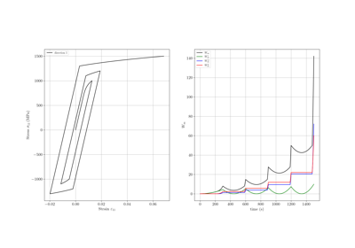
Plasticity with isotropic hardening example
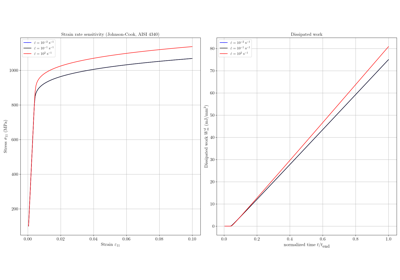
Johnson-Cook plasticity: strain-rate sensitivity
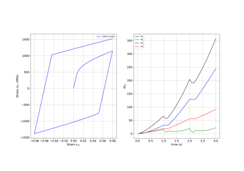
Plasticity with Isotropic and Kinematic Hardening Example
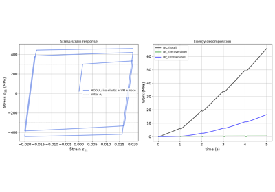
Modular UMAT Example — Composable Elasto-Plasticity
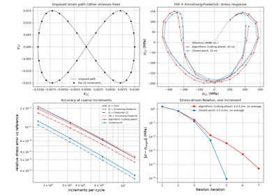
Closest-Point Projection — Non-Proportional Loading
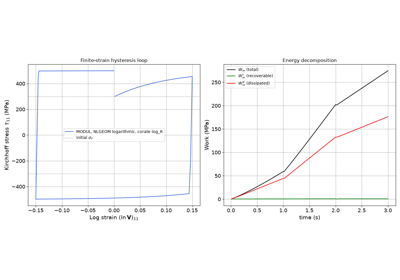
Modular UMAT under Finite Strain — Hencky Hyperelasto-Plasticity
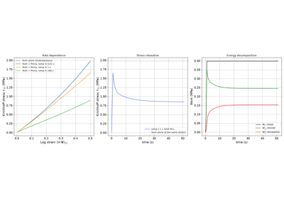
Modular UMAT: Hyperelastic Block with Prony Branches (Finite-Strain Viscoelasticity)
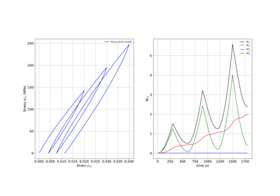
Prony Series Viscoelastic Model (Generalized Maxwell)
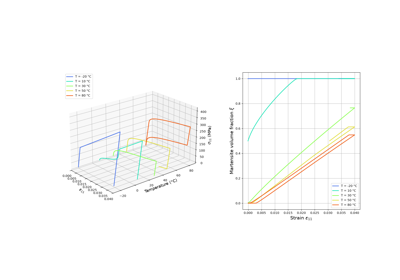
Shape Memory Alloy - Transformation and Reorientation
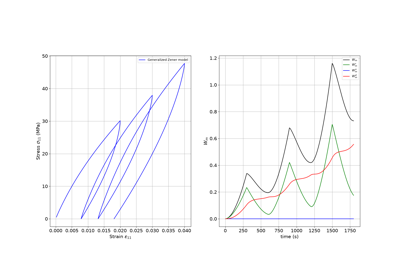
Generalized Zener model (N Kelvin branches)
Thermomechanical Constitutive Laws
Below are examples illustrating Simcoon’s thermomechanical constitutive laws. These examples extend the mechanical models with thermal coupling, including temperature evolution, thermal expansion, and dissipation.
Thermoelastic Models:
ELISO - Isotropic elasticity with thermal coupling
ELIST - Transversely isotropic elasticity with thermal coupling
ELORT - Orthotropic elasticity with thermal coupling
Thermoplasticity Models:
EPICP - Plasticity with isotropic hardening and thermal dissipation
EPKCP - Plasticity with kinematic hardening and thermal dissipation
EPJCK - Johnson-Cook plasticity with adiabatic self-heating and thermal softening
Thermoviscoelastic Models:
ZENER - Zener model with thermal coupling
Shape Memory Alloys:
SMA_T - SMA with full thermomechanical coupling
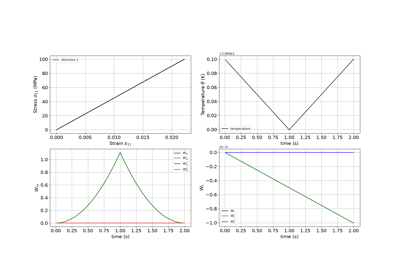
Transversely isotropic elasticity (thermomechanical)

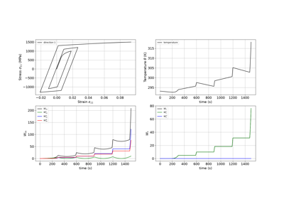
Plasticity with isotropic hardening (thermomechanical)
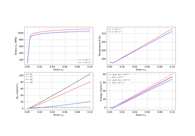
Johnson-Cook plasticity with adiabatic self-heating (thermomechanical)
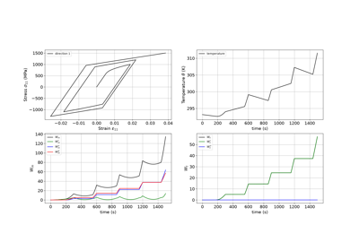
Plasticity with kinematic hardening (thermomechanical)
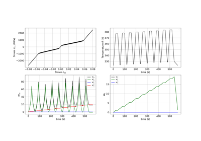
Shape Memory Alloy - Thermomechanical coupling
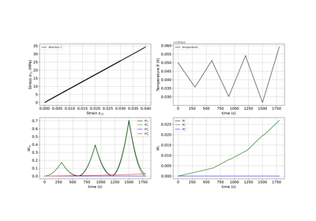
Zener viscoelastic model (thermomechanical)
Hyperelasticity
Below are examples illustrating Simcoon’s capabilities for simulating materials exhibiting hyperelasticity.
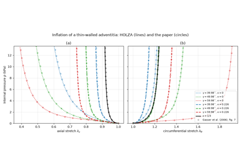
Anisotropic hyperelasticity - inflation of an arterial layer (HOLZA)
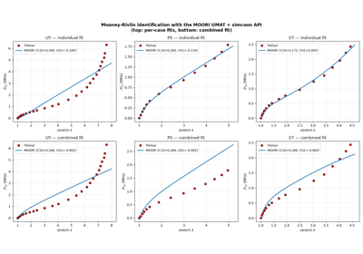
Mooney-Rivlin identification with the MOORI UMAT and the simcoon API
Continuum Mechanics Examples
Below are examples illustrating Simcoon’s main features. These examples are designed to serve as tutorials. In that sense, an effort is made to keep the scripts simple and executable with a low computational cost.
This gallery contains examples demonstrating:
Constitutive relations - Building stiffness and compliance tensors for various material symmetries
Stress measures - Converting between different stress measures (Cauchy, PK1, PK2, etc.)
Rotation operations - Rotating tensors and vectors
Yield criteria - von Mises, Tresca, Drucker, and Hill anisotropic criteria
Typed tensors -
Tensor2/Tensor4: type tags, batches, rotation and transportTensor basis - Material frames, convected (natural) bases and metric-weighted invariants with
Basis
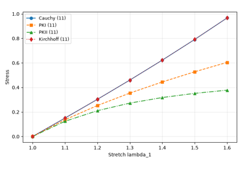
Stress transfer: Cauchy → PKI/PKII/Kirchhoff
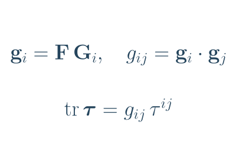
The basis of a tensor: frames, convected bases and the metric
Analysis and processing examples
Below are examples illustrating Simcoon’s capabilities for simulating mechanical and thermomechanical responses and post-processing results.
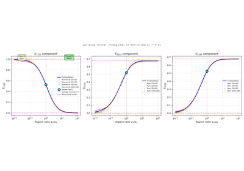
Numerical vs Analytical Eshelby Tensor Comparison
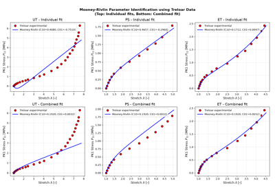
Parameter Identification for Mooney-Rivlin Hyperelastic Material
Heterogeneous materials simulation
Below are examples illustrating Simcoon’s capabilities for simulating heterogeneous materials.
This gallery contains examples demonstrating:
Eshelby tensors - Computing Eshelby and Hill interaction tensors for various inclusion shapes
Micromechanics - Effective properties using Mori-Tanaka and self-consistent schemes, effect of volume fraction and aspect ratio
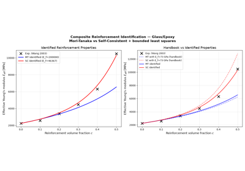
Composite Parameter Identification using Mori-Tanaka and Self-Consistent
Parameter identification examples
Below are examples illustrating Simcoon’s parameter-identification workflow:
calibrating constitutive-model parameters from experimental data with the
identification API (sim.identification and sim.calc_cost) on top of the
material-point solver and homogenization tools.
This gallery contains examples demonstrating:
Chaboche cyclic plasticity - Identifying 7 elasto-plastic parameters (
EPCHAUMAT) from cyclic uniaxial tests, with an NMSE-per-response costKeys in a JSON material file - The key-substitution workflow (
keys/material.jsontemplate,parameters.inp) on the JSON inputs of the solver, identifying the yield stress and hardening modulus ofEPICPwithdifferential_evolution, the exponent fixed through aConstant
Note
Two related hyperelastic identification examples live in other galleries:
analysis/hyperelastic_parameter_identification.py (hand-rolled analytical
stress + manual scipy/sklearn cost) and
hyperelasticity/hyperelastic_umat_identification.py (the deployable
MOORI UMAT driven through sim.solver with the identification API).
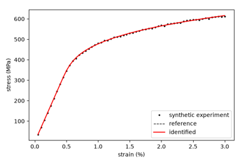
Identification through keys in a JSON material file
Python and machine-learning constitutive laws
Constitutive laws written in Python and driven by the C++ material-point solver
through the PYEXT callback (see Constitutive laws in Python (PYEXT)).
pyumat_numpy_j2 - J2 plasticity written in numpy, compared with
EPICP